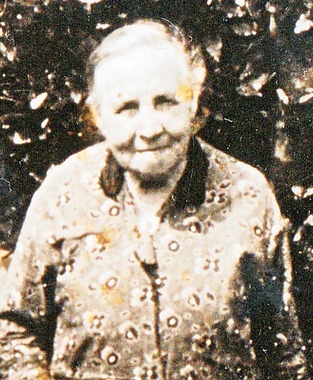
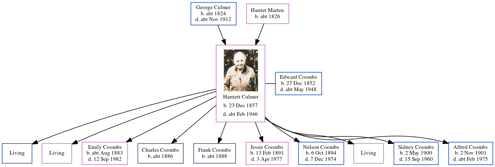

Harriett Coombs (née Culmer) 1857 - c1946
[ Home ] | [ Calendar ] | [ Surnames Index ] | [ Census Index ] | [ Family History ]The child of George Culmer (an agricultural laborer) and Harriet Marten, Harriett Culmer, the first cousin three-times-removed on the mother's side of Nigel Horne, was born in Canterbury, Kent, England on Dec 23, 18571,2, was baptized in Hackington, Kent, England on Jan 17, 1858 and married Edward Coombs (an agricultural laborer with whom she had 10 children: George Edward, Alice Ann, Emily Harriett, Charles F, Frank, Jessie May, Nelson Victor, Harriett, Sidney John and Alfred William Constable, along with 3 surviving children) in Faversham, Kent, England around Aug 18754.
During her life, she was living at St Thomas Hill in Canterbury in 18618; at Waterham, Hernhill, Kent on Apr 5, 18917; at Red Lion Inn, Hernhill, Kent on Mar 31, 19016; on Crockham Lane, Hernhill, Kent on Apr 2, 19115; and at 5 Manor Cottages, Swale, Kent on Sep 29, 19391.
She died c. Feb 1946 in Sittingbourne, Kent, England3.
Parents
- George was born c. 1824
- Harriet was born c. 1826
Children
- Emily Harriett was born c. Aug 1883
- Charles F was born c. 1886
- Frank was born c. 1888
- Jessie May was born on Feb 13, 1891
- Nelson Victor was born on Oct 6, 1894
- Sidney John was born on May 2, 1900
- Alfred William Constable was born on Nov 2, 1901
Citations
- 1939 Register - Findmypast (was the wife of the head of the household)
- England & Wales births 1837-2006 - Findmypast
- England & Wales deaths 1837-2007 - Findmypast
- England & Wales marriages 1837-2008 - Findmypast
- 1911 Census for England & Wales - Findmypast (was age 55 and the wife of the head of the household)
- 1901 England, Wales & Scotland Census - Findmypast (was age 45 and the wife of the head of the household)
- 1891 England, Wales & Scotland Census - Findmypast (was age 34 and the wife of the head of the household)
- 1861 England, Wales & Scotland Census - Findmypast
Media
Harriett Culmer

England & Wales births 1837-2006 - BMD/B/1858/1/AD/000943/023
1939 Register Transcription - TNA-R39-1851-1851C-002-20
England & Wales marriages 1837-2008 - BMD/M/1875/3/AZ/000064/111
England & Wales deaths 1837-2007 - BMD/D/1946/1/AZ/000226/053
1861 England, Wales & Scotland Census Transcription - GBC-1861-0003450764
Family Tree
Generated by ged2site. Last updated on Jun 11, 2024